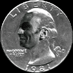

 |
| "Conocí
a Ibrahim en Sing-Sing, donde los sucios polizontes me condujeron tras la
masacre del Bronx en la que borramos del mapa a la banda de Smitty Long. Era ua tipo curioso, ¿sabe lo que le digo ? Si, un tipo raro, maniático, yo que sé ...como un relojero, minucioso en su manera de enfrentarse al crimen. Recuerdo que ahí dentro se le conocia como "el Fino"... los chicos se pasaban un poco, es cierto, lo hacían para que no cantara . ..el chico lo hacía fatal.. ya se sabe que la vida dentro es dura y venenosa como una serpiente; para mí no, porque yo me meo en las blancas camisas de los alcaides y de la Ley." Con estas palabras resume Capone, según su biógrafo, la relación que mantuvo con Ibrahim en los tiempos en que éste tuvo problemas con las leyes. Unos contactos en condiciones extremas que dejaron una huella imborrable en nuestro protagonista y que cambiarían su personalidad haciéndolo mas grosero y chabacano.Cuenta el famoso mafioso que el primer golpe que dió nada mas salir de la penitenciaría contó con la colaboración especial de Ibrahim, que acudió durante dos semanas a tomarse un cafelíto en un bar frente a uno de los bancos asaltados, para tomar nota de los movimientos de los polizontes. Estas tareas de investigación las realizaba con una discreción y limpiezas tales que pronto fue conocido en los círculos gangsteriles como "La Asistenta" y elevado a los altares de la eficacia y el buen oficio. Asimismo se ganába el apodo de "El Jetas" en los círculos hosteleros por su fantástica habilidad para escabullirse sin poner un duro. "Supe enseguida que estaba frente a un tipo con agallas en cuanto me dí cuenta que parecía no respirar normalmente y que tenía unas pequeñas incisiones a ambos lados de su cuello....Quise que trabajara para mí pero tuvo problemas para pagarme el alcohol que consumía e hizo que me enfadara. Había dejado de ser un buen chico y merecía por ello unos azotes; para regenerarse, ya sabe, asf que mandé a los muchachos con un recadito pero los muchachos estaban pachuchos, no saben lo que es azotar y le dieron una paliza..Una temporadita en el hospital no le viene mal a nadie..¡imagínese : comida y cama grátis es más de lo que podía soñar...! El chico aprendió, era inteligente y aprendió..Yo ya no le volvería a ver, ¿a quién le importaba? Nadie toma dos veces el pelo al viejo AL...nadie vivo, naturalmente." |